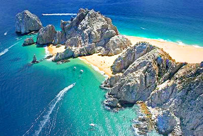

Lugares que puedes visitar!
1. Ciudad de Mexico

Capital de México, una metrópoli famosa por su vibrante vida urbana, congregando museos de relevancia mundial, emblemáticos sitios históricos, masivos festivales, glamorosas avenidas, tiendas, restaurantes, y por supuesto, una de las noches más animadas de Latinoamérica.Entre sus atractivos principales, destaca un fascinante centro histórico declarado Patrimonio de la Humanidad por la Unesco, con impresionantes sitios de la cultura Azteca, que dan cuenta de una historia de desarrollo humano de más de 3.000 años y joyas coloniales de los siglos XVI al XIX. En sus entornos, no se puede dejar de mencionar la vecina Teotihuacán con sus gigantes pirámides del sol y la luna. Más información en viajes a Ciudad de México.
2. Los cabos
Considerado uno de los lugares turísticos de México de mayor belleza, deslumbrando con sus kilómetros de playas bañadas por el Mar de Cortés, famosas por sus arenas doradas y aguas turquesas, inmersas entre paisajes de montaña y desierto. Esta zona, también hace parte del conjunto de islas y áreas protegidas del Golfo de California, declaradas por su riqueza natural, Patrimonio de la Humanidad por la Unesco.El pintoresco pueblo de San José del Cabo, la vida nocturna del Cabo San Lucas y las grandes cadenas hoteleras en el Corredor turístico, conforman las tres áreas de Los Cabos, constituyendo en su conjunto un espectacular destino cuya oferta combina el ecoturismo, practica de deportes, descanso y entretención.
3. Cancún
Isla reconocida por sus playas de arenas blancas y aguas turquesas entre el Mar Caribe y la Laguna Nichupté, hogar del segundo arrecife de coral más importante del mundo después de la Gran Barrera Australiana, en un entorno selvático y próximo a los milenarios vestigios arqueológicos de la Rivera Maya y Chichén Itzá.Dentro de sus atractivos principales, destacan una franja de 23 kilómetros de playas, numerosos hoteles pertenecientes a cadenas multinacionales, centros de spa, campos de golf y cientos de restaurantes, que logran en su conjunto uno de los balnearios con mejor infraestructura turística del mundo.
4. Acapulco
Considerado uno de los balnearios más antiguos de México, cautivando por su paradisiaca bahía situada entre montañas y acantilados, hogar de idílicas playas bañadas por el Océano Atlántico, con aguas de oleaje suave y arenas doradas en donde se han situado diversos hoteles de lujo, clubes nocturnos y sofisticados restaurantes.Hoy dividido en tres zonas turísticas conocidas como, Acapulco Tradicional, Acapulco Dorado y Acapulco Diamante, mantiene la elegancia y glamour que fascinó desde mediados del siglo pasado a diversas estrellas de Hollywood.